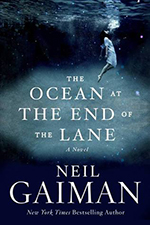
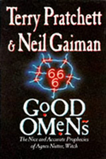
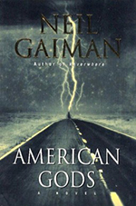
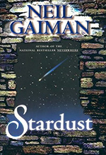

Neil Gaiman
Born on November 10, 1960 in Portchester, England, Neil Gaiman is a bestselling, critically acclaimed writer who made his way in the comics/graphic novel world, becoming known for the groundbreaking series Sandman. A lover of the fantastic and primordial, Gaiman has also penned a variety of book length projects that include Good Omen, Neverwhere, American Gods, Anansi Boys and The Graveyard Book. The fairy tale Stardust was turned into a 2007 movie while the layered novel Coraline became an Oscar-nominated, BAFTA award-winning animated film. In 2017, Gaiman's novel American Gods was also adapted into a TV series on the Starz network.
A voracious reader who immersed himself in libraries growing up, Gaiman eventually worked as a journalist and made his book publishing debut penning a 1984 biography of the British band Duran Duran, followed by a bio on Hitchhiker's Guide to the Galaxy author Douglas Adams. Gaiman's influences include Edgar Allan Poe, C.S. Lewis, H.P. Lovecraft, J.R.R. Tolkien, Ursula K. Leguin and Samuel R. Delany, Gaiman found success in the areas of fantasy, horror, speculative fiction, comics and genre blends. [5]
Works
-

The Ocean At The End Of The Lane
A middle-aged man returns to his childhood home to attend a funeral. Although the house he lived in is long gone, he is drawn to the farm at the end of the road, where, when he was seven, he encountered a most remarkable girl, Lettie Hempstock, and her mother and grandmother. He hasn’t thought of Lettie in decades, and yet as he sits by the pond (a pond that she’d claimed was an ocean) behind the ramshackle old farmhouse where she once lived, the unremembered past comes flooding back. And it is a past too strange, too frightening, too dangerous to have happened to anyone, let alone a small boy. A groundbreaking work as delicate as a butterfly’s wing and as menacing as a knife in the dark, The Ocean at the End of the Lane is told with a rare understanding of all that makes us human, and shows the power of stories to reveal and shelter us from the darkness inside and out. [1]
Amazon.com
Neil Gaiman's intent was simple: to write a short story. What he ended up with instead was The Ocean at the of the Lane--his first adult novel since Anansi Boys came out in 2005, and a narrative so thoughtful and thrilling that it's as difficult to stop reading as it was for Gaiman to stop writing. Forty years ago, our narrator, who was then a seven-year-old boy, unwittingly discovered a neighboring family’s supernatural secret. What happens next is an imaginative romp through otherwordly adventure that could only come from Gaiman's magical mind. Childhood innocence is tested and transcended as we see what getting between ancient, mystic forces can cost, as well as what can be gained from the power of true friendship. The result is a captivating tale that is equal parts sweet, sad, and spooky.Robin A. Rothman | Amazon.com
Booklist
In Gaiman’s first novel for adults since Anansi Boys (2005), the never-named fiftyish narrator is back in his childhood homeland, rural Sussex, England, where he’s just delivered the eulogy at a funeral. With “an hour or so to kill” afterward, he drives about—aimlessly, he thinks—until he’s at the crucible of his consciousness: a farmhouse with a duck pond. There, when he was seven, lived the Hempstocks, a crone, a housewife, and an 11-year-old girl, who said they were grandmother, mother, and daughter. Now, he finds the crone and, eventually, the housewife—the same ones, unchanged—while the girl is still gone, just as she was at the end of the childhood adventure he recalls in a reverie that lasts all afternoon. He remembers how he became the vector for a malign force attempting to invade and waste our world. The three Hempstocks are guardians, from time almost immemorial, situated to block such forces and, should that fail, fight them.
Gaiman mines mythological typology—the three-fold goddess, the water of life (the pond, actually an ocean)—and his own childhood milieu to build the cosmology and the theater of a story he tells more gracefully than any he’s told since Stardust (1999). And don’t worry about that “for adults” designation: it’s a matter of tone. This lovely yarn is good for anyone who can read it. HIGH-DEMAND BACKSTORY: That this is the popular author’s first book for adults in eight years pretty much sums up why this will be in demand.Ray Olson | Booklist @ Amazon.com
B. Case
Right up front I should admit, I'd never heard of Neil Gaiman before I read an enthusiastic newspaper review about this book and decided to preorder it a few days ago. Last night, it was wirelessly delivered to my Kindle and this morning, I picked it up and started reading. Almost instantly, I was so absorbed and lost in the storytelling experience that I didn't do anything else until I finished it a few hours later. It's a short book; it's enchanting; it's very well written...definitely top-quality fantasy literature. I'm not a fan of fantasy literature, but this book swept me away into such a delightful and fascinating series of incredible adventures--or should I say misadventures--that I could not pull myself away. The author is correct to warn that this is not a fable for children...the reality is far too stark and dark, and there are definitely some adult themes.
"The Ocean at the End of the Lane" is a tale about a lonely bookish seven-year old whose life takes a terrifying turn into a dark and creepy reality. The child is never named, but in recent interviews, the author admits that this child is very much like he was at that age. The child lives in the lovely English countryside of Sussex--the same environment where the author grew up. And like Gaiman, the child is wise, responsible, and moral beyond his years. The parents are blithely confident that nothing bad could happen to their brilliant bookish son in such a bucolic setting. But of course, bad things can, and do happen, especially to the pure and innocent... The parents have no idea that the Hempstocks--an eleven-year-old girl, her mother, and grandmother--who live by a pond at the end of the lane, are really a group of immortals who play at being human. Our seven-year-old child makes friends with the girl, Lettie Hempstock, and she introduces him to the pond, which is really an ocean. Eventually, our narrator and Lettie take a trip into a higher plain of reality that is entered somehow through the property owned by the Hempstocks, and so begins a series of remarkable misadventures with unforeseen consequences.
This novel is a heroic tale about the age-old battle between childhood innocence and mythic forces. The book will charm you, fill you with awe, make you feel on edge, surprise you, and make you want to keep on reading no mater what important obligations you might have waiting for you to accomplish. Since finishing the book this afternoon, I was so curious about this fine writer that I started doing research into his life, philosophy, and writing. It seems that in prepublication interviews, Gaiman says that he's prouder of this particular work than anything else he's ever written...and, as I learned today, this is an author who has had an insanely prolific career spanning blockbuster successes across a large number of different creative media. He says he's put an enormous amount of effort into writing and rewriting this book in order to get the tone, words, and dramatic focus just right. A number of critics have already said they consider this work to be as close to sterling literary fiction as Gaiman is ever likely to get.
Indeed, I was very impressed. For me, this work is, without doubt, first-rate fantasy and escapist fiction...and very fine literature, as well. It delivers a highly imaginative, fabulous and fascinating fable that envelops, and attempts to explain, everything in the space-time continuum. Yes, it's that ambitious! It had me hooked from the first to the last page. Simply put: it is an incredible gem of a novel.B. Case | Amazon.com
-

Good Omens
According to The Nice and Accurate Prophecies of Agnes Nutter, Witch (the world's only completely accurate book of prophecies, written in 1655, before she exploded), the world will end on a Saturday. Next Saturday, in fact. Just before dinner. So the armies of Good and Evil are amassing, Atlantis is rising, frogs are falling, tempers are flaring. Everything appears to be going according to Divine Plan. Except a somewhat fussy angel and a fast-living demon—both of whom have lived amongst Earth's mortals since The Beginning and have grown rather fond of the lifestyle—are not actually looking forward to the coming Rapture. And someone seems to have misplaced the Antichrist . . . [2]
Amazon.com
Pratchett (of Discworld fame) and Gaiman (of Sandman fame) may seem an unlikely combination, but the topic (Armageddon) of this fast-paced novel is old hat to both. Pratchett's wackiness collaborates with Gaiman's morbid humor; the result is a humanist delight to be savored and reread again and again. You see, there was a bit of a mixup when the Antichrist was born, due in part to the machinations of Crowley, who did not so much fall as saunter downwards, and in part to the mysterious ways as manifested in the form of a part-time rare book dealer, an angel named Aziraphale. Like top agents everywhere, they've long had more in common with each other than the sides they represent, or the conflict they are nominally engaged in. The only person who knows how it will all end is Agnes Nutter, a witch whose prophecies all come true, if one can only manage to decipher them. The minor characters along the way (Famine makes an appearance as diet crazes, no-calorie food and anorexia epidemics) are as much fun as the story as a whole, which adds up to one of those rare books which is enormous fun to read the first time, and the second time, and the third time...Amazon.com | Amazon.com
School Library Journal
The end of the world is nigh! At least according to the prophecies of Agnes Nutter, a witch whose predictions are usually accurate but seldom heeded. Eleven years before the deadly Last Saturday Night, the ancient rivals of good and evil personified by the angelic Aziraphale (otherwise living as a London book dealer) and the demonic devil and former serpent Crowley clash in substituting the Antichrist during the birth of a baby. But the babies are switched as an unexpected third child enters the picture. The confusion picks up pace as witch hunters Sgt. Shadwell and Newton Pulsifer pursue modern Nutter follower Anathema Device. Along the way, countless puns, humorous footnotes, and satirical illusions enliven the story. A book that's sure to appeal to devoted fans of Douglas Adams.Diana C. Hirsch | School Library Journal @ Amazon.com
Library journal
The birth of the Antichrist in a London hospital begins the countdown to Armageddon. As the forces of both Heaven and Hell anticipate the coming battle to decide the world's fate, a desperate few--including an angel with a taste for rare books, a demon in mirrorshades, the descendant of the world's most accurate prophetess, a part-time witchfinder, four young children, and a dog--race against time to prevent it. Irreverently funny and unexpectedly wise, this collaboration between comics writer Gaiman and Discworld series author Pratchett fuses fantasy and comedy into an untrammeled romp through the latter days. Highly recommended for fantasy and general fiction collections.Reed Business Information | Library Journal @ Amazon.com
-

American Gods
Shadow spent three years in prison, keeping his head down, doing his time. All he wanted was to get back to the loving arms of his wife and to stay out of trouble for the rest of his life. But days before his scheduled release, he learns that his wife has been killed in an accident, and his world becomes a colder place. On the plane ride home to the funeral, Shadow meets a grizzled man who calls himself Mr. Wednesday. A self-styled grifter and rogue, Wednesday offers Shadow a job. And Shadow, a man with nothing to lose, accepts.
But working for the enigmatic Wednesday is not without its price, and Shadow soon learns that his role in Wednesday's schemes will be far more dangerous than he ever could have imagined. Entangled in a world of secrets, he embarks on a wild road trip and encounters, among others, the murderous Czernobog, the impish Mr. Nancy, and the beautiful Easter -- all of whom seem to know more about Shadow than he himself does. Shadow will learn that the past does not die, that everyone, including his late wife, had secrets, and that the stakes are higher than anyone could have imagined. All around them a storm of epic proportions threatens to break. Soon Shadow and Wednesday will be swept up into a conflict as old as humanity itself. For beneath the placid surface of everyday life a war is being fought -- and the prize is the very soul of America. As unsettling as it is exhilarating, American Gods is a dark and kaleidoscopic journey deep into myth and across an America at once eerily familiar and utterly alien. Magnificently told, this work of literary magic will haunt the reader far beyond the final page. [3]
Amazon.com
American Gods is Neil Gaiman's best and most ambitious novel yet, a scary, strange, and hallucinogenic road-trip story wrapped around a deep examination of the American spirit. Gaiman tackles everything from the onslaught of the information age to the meaning of death, but he doesn't sacrifice the razor-sharp plotting and narrative style he's been delivering since his Sandman days. Shadow gets out of prison early when his wife is killed in a car crash. At a loss, he takes up with a mysterious character called Wednesday, who is much more than he appears. In fact, Wednesday is an old god, once known as Odin the All-father, who is roaming America rounding up his forgotten fellows in preparation for an epic battle against the upstart deities of the Internet, credit cards, television, and all that is wired. Shadow agrees to help Wednesday, and they whirl through a psycho-spiritual storm that becomes all too real in its manifestations. For instance, Shadow's dead wife Laura keeps showing up, and not just as a ghost--the difficulty of their continuing relationship is by turns grim and darkly funny, just like the rest of the book.
Armed only with some coin tricks and a sense of purpose, Shadow travels through, around, and underneath the visible surface of things, digging up all the powerful myths Americans brought with them in their journeys to this land as well as the ones that were already here. Shadow's road story is the heart of the novel, and it's here that Gaiman offers up the details that make this such a cinematic book--the distinctly American foods and diversions, the bizarre roadside attractions, the decrepit gods reduced to shell games and prostitution. "This is a bad land for Gods," says Shadow. More than a tourist in America, but not a native, Neil Gaiman offers an outside-in and inside-out perspective on the soul and spirituality of the country--our obsessions with money and power, our jumbled religious heritage and its societal outcomes, and the millennial decisions we face about what's real and what's not.Therese Littleton | Amazon.com
Publishers Weekly
Titans clash, but with more fuss than fury in this fantasy demi-epic from the author of Neverwhere. The intriguing premise of Gaiman's tale is that the gods of European yore, who came to North America with their immigrant believers, are squaring off for a rumble with new indigenous deities: "gods of credit card and freeway, of Internet and telephone, of radio and hospital and television, gods of plastic and of beeper and of neon." They all walk around in mufti, disguised as ordinary people, which causes no end of trouble for 32-year-old protagonist Shadow Moon, who can't turn around without bumping into a minor divinity. Released from prison the day after his beloved wife dies in a car accident, Shadow takes a job as emissary for Mr. Wednesday, avatar of the Norse god Grimnir, unaware that his boss's recruiting trip across the American heartland will subject him to repeat visits from the reanimated corpse of his dead wife and brutal roughing up by the goons of Wednesday's adversary, Mr. World. At last Shadow must reevaluate his own deeply held beliefs in order to determine his crucial role in the final showdown.
Gaiman tries to keep the magical and the mundane evenly balanced, but he is clearly more interested in the activities of his human protagonists: Shadow's poignant personal moments and the tale's affectionate slices of smalltown life are much better developed than the aimless plot, which bounces Shadow from one episodic encounter to another in a design only the gods seem to know. Mere mortal readers will enjoy the tale's wit, but puzzle over its strained mythopoeia. (One-day laydown, June 19)Forecast: Even when he isn't in top form, Gaiman, creator of the acclaimed Sandman comics series, trumps many storytellers. Momentously titled, and allotted a dramatic one-day laydown with a 12-city author tour, his latest will appeal to fans and attract mainstream review coverage for better or for worse because of the rich possibilities of its premise.Cahners Business Information | Publishers Weekly @ Amazon.come
Booklist
Shadow, a strong, silent, Steven Seagal type, has kept his head down while doing time for creaming the guys who ran off with his share of a heist. He is about to be released, ticket home in hand, thanks to his lovely wife; then his departure is pushed up a few days--unhappily, so that he can attend her funeral. Weather forces his flight down in St. Louis, and he winds up on a short hop seated next to a mysterious Mr. Wednesday, who informs him that his once and, he had hoped, future boss is also dead. Would he like to work for Wednesday, instead? The guy is too creepy by half but, as it happens, hard to refuse. And after Shadow meets some of Wednesday's equally creepy friends, becomes an accomplice to a clever bank robbery, and gets coldcocked and kidnapped by black-clad heavies, he acquires a certain job loyalty, if only to find out what he has signed on for--an upcoming battle between the old gods of America's many immigrants' original cultures and the new gods of global, homogenizing consumerism. The old gods are trying to live peaceably enough in retirement, which is the predicament Wednesday (i.e., Wotan, or Odin) must overcome to rally them. After two sterling fantasies, the dark Neverwhere (1997) and the lighter, utterly charming Stardust (1999), Gaiman comes a cropper in a tale that is just too busy and, oddly for him, unengaging. His large fandom may make it a success, but many of them, even, will find it a chore to get through.Ray Olson | Booklist @ Amazon.com
-

Stardust
Young Tristran Thorn will do anything to win the cold heart of beautiful Victoria—even fetch her the star they watch fall from the night sky. But to do so, he must enter the unexplored lands on the other side of the ancient wall that gives their tiny village its name. Beyond that old stone wall, Tristran learns, lies Faerie—where nothing, not even a fallen star, is what he imagined. [4]
Booklist
Wall is a whole night's drive from London. The town is named for a rock barrier on its eastern side, with a narrow break in it through which a meadow, a stream, and a forest are apparent, and over which two townsmen always stand guard to prevent entry, except for a few days every nine years. That is when there is a fair in the meadow, put on by people who aren't strictly human, one of whom, in the middle of the nineteenth century, seduces 18-year-old Dunstan Thorn. Nine months later, a baby is delivered to newly married Dunstan, its name written on a card pinned to its blanket: Trystran Thorn. Stardust is primarily Trystran's story. When he is 17, he pledges to fetch for his beloved, the star that has just fallen on the other side of the wall.
Of course, first he has to be allowed on the other side, but that proves easy when Dunstan whispers something to the guards. Then Trystran's adventures really begin, for on the other side is Faerie. Once there, Trystran discovers he knows the locations of places he cannot remember ever having heard of before. He knows exactly where the star has fallen, too, and readily finds it--or, actually, her. Nothing thereafter is as easy for Trystran, much to any reader's delight. Gaiman gently borrows from many fine fantasists--for starters, from Andersen, Tolkien, Macdonald, and, for the framing device, Christina Rossetti in her "Goblin Market" --but produces something sparkling, fresh, and charming, if not exactly new under the sun. Superb.Ray Olson | Booklist @ Amazon.com
Amazon.com
Stardust is an utterly charming fairy tale in the tradition of The Princess Bride and The Neverending Story. Neil Gaiman, creator of the darkly elegant Sandman comics and author of The Day I Swapped My Dad for Two Goldfish, tells the story of young Tristran Thorn and his adventures in the land of Faerie. One fateful night, Tristran promises his beloved that he will retrieve a fallen star for her from beyond the Wall that stands between their rural English town (called, appropriately, Wall) and the Faerie realm. No one ever ventures beyond the Wall except to attend an enchanted flea market that is held every nine years (and during which, unbeknownst to him, Tristran was conceived).
But Tristran bravely sets out to fetch the fallen star and thus win the hand of his love. His adventures in the magical land will keep you turning pages as fast as you can--he and the star escape evil old witches, deadly clutching trees, goblin press-gangs, and the scheming sons of the dead Lord of Stormhold. The story is by turns thrillingly scary and very funny. You'll love goofy, earnest Tristran and the talking animals, gnomes, magic trees, and other irresistible denizens of Faerie that he encounters in his travels. Stardust is a perfect read-aloud book, a brand-new fairy tale you'll want to share with a kid, or maybe hoard for yourself. (If you read it to kids, watch out for a couple of spicy sex bits and one epithet.)Therese Littleton | Amazon.com
Kirkus
The multitalented author of The Sandman graphic novels and last year's Neverwhere charms again, with a deftly written fantasy adventure tale set in early Victorian England and enriched by familiar folk materials. In a rural town called Wall (so named for the stone bulwark that separates it from a mysterious meadow through which strange shapes are often seen moving), on "Market Day," when the citizens of "Faerie" (land) mingle with humans, young Dunstan Thorn makes love to a bewitching maiden and is presented nine months afterward with an infant son (delivered from beyond the Wall). The latter, Tristran, grows up to fall in love himself and rashly promise his beloved that he'll bring her the star they both observe falling from the sky.
Tristran's ensuing quest takes him deep into Faerie, and, unbeknownst to him, competition with the star's other pursuers: three weird sisters (the Lilim), gifted with magical powers though still susceptible to "the snares of age and time"; and the surviving sons of the late Lord of Stormhold, accompanied everywhere by their several dead brothers (whom they happen to have murdered). Tristran finds his star (in human form, no less); survives outrageous tests and mishaps, including passage on a "sky-ship" and transformation into a dormouse; and, safely returned to Wall, acquires through a gracious act of renunciation his (long promised) "heart's desire". Gaiman blends these beguiling particulars skillfully in a comic romance, reminiscent of James Thurber's fables, in which even throwaway minutiae radiate good-natured inventiveness (e.g., its hero's narrow escape from a "goblin press-gang" seeking human mercenaries to fight "the goblins" endless wars beneath the earth). There are dozens of fantasy writers around reshaping traditional stories, but none with anything like Gaiman's distinctive wit, warmth, and narrative energy. Wonderful stuff, for kids of all ages.Kirkus Associates | Kirkus @ Amazon.com
- [1] https://www.amazon.com/Ocean-End-Lane-Novel/dp/0062459368
- [2] https://www.amazon.com/Good-Omens-Accurate-Prophecies-Nutter/dp/0060853980
- [3] https://www.amazon.com/American-Gods-Neil-Gaiman/dp/0380973650
- [4] https://www.amazon.com/Stardust-Neil-Gaiman/dp/0061689246
- [5] https://www.biography.com/people/neil-gaiman-042617